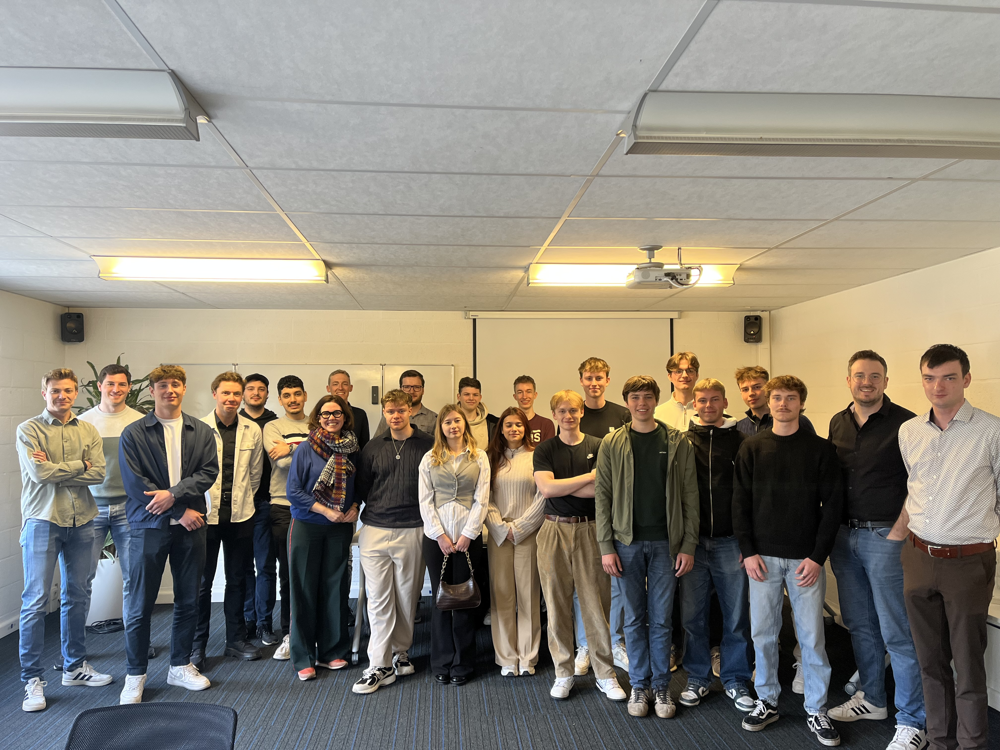
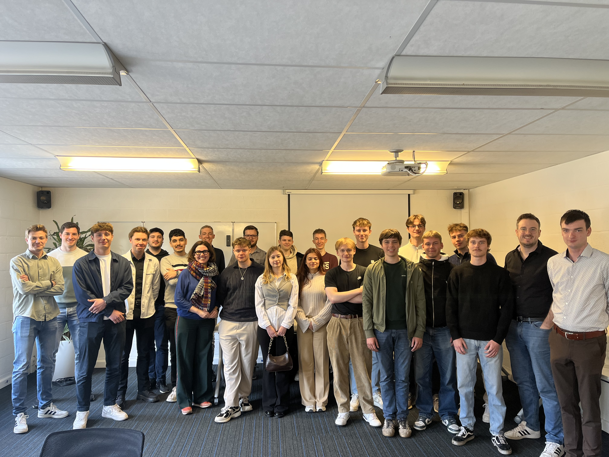
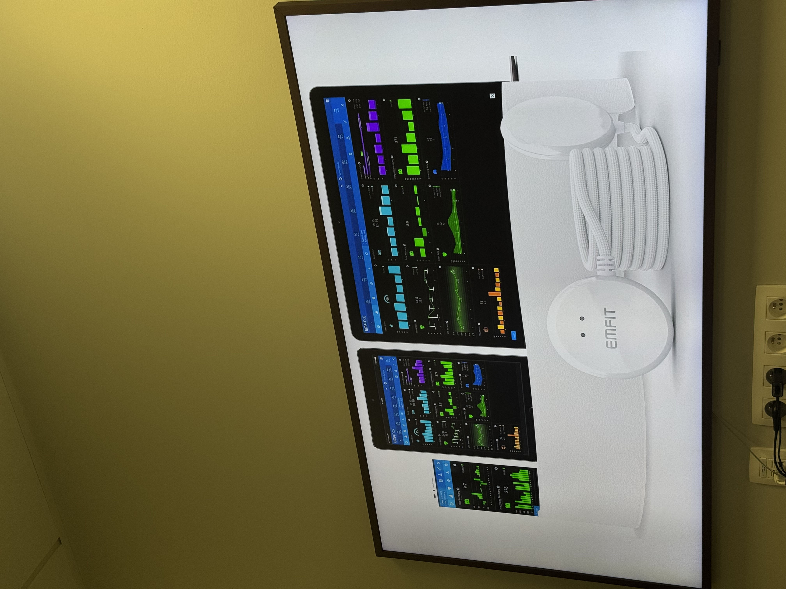
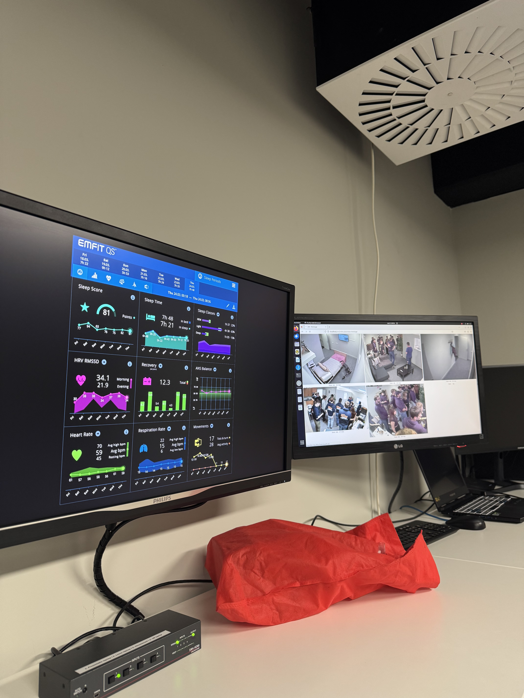
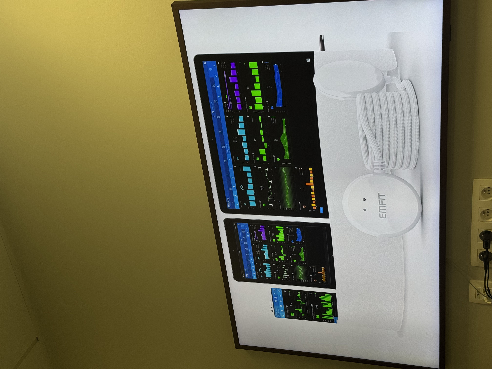
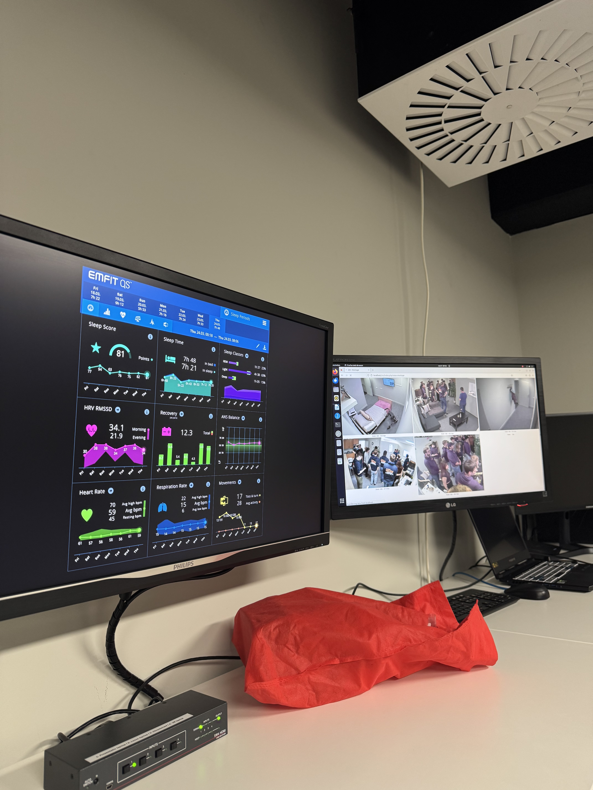

Inspiration & Concept
This website began as a visual experiment inspired by two seemingly opposite ideas: Langton’s Ant and Mondriaan’s grids.
Langton’s Ant, a cellular automaton with chaotic yet emergent behavior, symbolizes how simple rules can lead to complex systems. I wanted to mirror that idea in a visual way: a grid-based interface that reacts and reshapes itself with minimal interaction.
Mondriaan’s rigid compositions, on the other hand, introduced a sense of structure and visual balance. Combining both worlds led me to a system that’s alive yet controlled, a modular, responsive, interactive grid that’s as functional as it is aesthetic.
Later in the process, I layered in animated mesh gradients to break the uniformity and add a playful, sensory element. The goal wasn’t just clarity, but curiosity. The gradients behave like mood, subtle, shifting, and unpredictable, reflecting the dynamic nature of what I’ve learned.
Final Reflection
Throughout this course, the company visits have been genuinely eye-opening. Before this experience, I had only a vague idea of the many roles and applications surrounding data. I’ve learned that data isn't just numbers in dashboards, it’s an entire ecosystem of interpretation, strategy, and impact.
Seeing how different companies, each with their own approach and philosophy, leverage data gave me a much deeper appreciation for the field. One highlight was visiting Sentigrate, where biometric data was used in real time through a smartphone’s selfie camera to track facial expressions. That tangible application of data was incredibly exciting and made the possibilities feel real. I was also fascinated by how data can be visualized in ways that aren't just beautiful but also deeply insightful.
Beyond the academic growth, I’ve deeply enjoyed the “non-classroom” format of this course. Getting out of the usual school setting and immersing myself in real environments gave me energy and inspiration I hadn’t felt in a long time. It allowed me to connect more naturally with classmates, I’ve made new friendships, built stronger bonds, and felt more like part of a group. Especially after the Copenhagen trip, I returned with a genuine sense of belonging and motivation. It reminded me how important social connection is to learning and personal growth.
These visits helped ease some of the stress I had about what life might look like after graduation. I used to worry whether there would be a clear path for me in the data world, but now I feel inspired and better prepared. I’ve grown both technically and personally, I’ve gained confidence in my curiosity, and I now see myself not just as a student, but as a developing professional. Going forward, I want to explore how data-driven systems can become more human-centered. I’m especially drawn to areas where data, storytelling, and design intersect. This experience hasn’t just informed my goals, it’s shaped them.
February 28: Mechelen: Urban Data Detectives
In Mechelen, we stepped into the role of digital detectives, mapping every visible data source in the city, from security cameras to air quality sensors. You can explore our findings here.
Later that day, Tom Vermeylen led a discussion that really got us thinking about the ethics behind surveillance and mass data collection. I was shocked by how normalized surveillance has become, it’s everywhere, but most people barely notice it.
It was both fascinating and a bit unsettling to see how easily we could be tracked just by walking through public space. Thankfully, facial recognition AI is still tightly regulated in Belgium, but the tech is there, and it’s only getting better. This visit reminded me that smart cities are more than just connected, they’re watching, too.
March 14: Intellus
At Intellus, we got a peek into what it’s like to work as a consultant in the data world. The SAP architecture session stood out, complex systems, data pipelines, and business-critical infrastructure. While I found SAP a bit too technical for my taste, it was still eye-opening to see how data keeps huge companies running.
What stuck with me more than the tech was the way they described the job. They don’t expect you to be an expert on day one. You learn on the job, and they guide you. As someone who finds the post-graduation world of data pretty daunting, this made me feel more at ease.
March 21: Sentigrate
 

At Sentigrate, I got to try out IntelliProve firsthand. The idea that a smartphone camera can scan your face and return health markers in seconds is kind of mind-blowing. Sentigrate builds the platforms behind this kind of medtech, connecting real-world sensors to scalable cloud architectures.
The team was young, ambitious, and clearly passionate about using data to improve lives. From bionic feet to stress sensors, they showed how raw data can be turned into meaningful health insights. It was inspiring to see how data science becomes something tangible, even personal.
March 28: VRT


This visit felt surprisingly familiar. I was especially intrigued by how they use AI to test banners, headers, and layouts. Coming from a design background, I loved the idea of A/B testing creative elements using real-time feedback. It’s where data, design, and psychology meet.
It was also cool to see how deeply data runs through their workflow, from content planning to metadata for archive footage. VRT is clearly aiming for a future where every part of production is smart and adaptive.
At one point, they mentioned that working there can feel chaotic, and honestly, that stuck with me. I’ve had work experiences like that before and didn’t love it. Still, I left feeling inspired by how creativity and data can support each other.
April 4: Colruyt Hackathon
This was one of the most intense visits. The hackathon was fast-paced and packed with info. I appreciated the “blind date”-style rotations, it was interesting to see how many different roles exist in the data world. But it was also a bit too much at times. The sheer number of job types made it hard to get a clear picture.
What felt more familiar was the hackathon itself. A lot of the challenge leaned into marketing and business logic, so I was able to use my previous experience there. It was a reminder that my creative background is still very relevant in data-driven spaces.
May 9: Geel (Lifesnaps Project)
 




In Geel, we started working with the Lifesnaps dataset, over 71 million rows of Fitbit data tied to mood tracking. At first, it was overwhelming. But slowly, as we cleaned the data, explored it, and started building basic models, it became one of the most rewarding projects of the year.
This was the first time I saw up close how data could genuinely help people. Connecting biometric signals to mental health trends was powerful. It showed me how data science can be deeply human.
April 23-24: Copenhagen Hackathon
This trip meant a lot to me. I joined partly to push myself out of my comfort zone, to meet people, and to feel more connected, and that happened. I bonded with classmates, laughed a lot, had real talks, and even saw my teachers more as people. When it was over, I genuinely felt sad. I even said so in the group chat, and the kind replies made it even better.
The hackathon itself had ups and downs. At first, I felt super insecure and underqualified. But I quickly saw that most others weren’t seasoned data experts either. The project, focused on Politiken’s subscriber growth, felt more like a branding brief than a true data challenge. We were missing key information and didn’t get to interact much with the KEA students, which felt like a missed opportunity.
Even so, I leaned into what I knew, branding, communication, storytelling, and still found value in the process. But honestly, the biggest takeaway wasn’t the hackathon. It was the people, the shared experience, and the feeling of belonging.
February 19: The Beacon (Antwerp)
The Beacon was all about smart logistics and the future of port operations. We got to see how data is slowly becoming the backbone of international shipping. Companies like Dashdoc and Dockflow are creating systems to cut down wasted time, reduce costs, and streamline transport flows. Even fruit containers are now monitored in real time for temperature changes.
What stood out most wasn’t just the tech, it was the scale of change. Antwerp’s port isn’t just modernizing; it’s transforming into a living data system. From AI‐driven routing to drone inspections, we’re watching the old logistics world evolve into something more intelligent, more responsive, and more connected.
Even though this visit didn’t grip me personally as much as some others, it gave me a clear picture of how digital infrastructure is reshaping one of Belgium’s biggest industries.